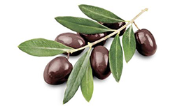

Peace Symbols
Peace SymbolsOverview
A number of peace symbols have been used many ways in various cultures and contexts. The dove and olive branch was used symbolically by early Christians and then eventually became a secular peace symbol, popularized by Pablo Picasso after World War 2. In the 1950s the "peace sign", as it is known today, was designed as the logo for the British Campaign for Nuclear Disarmament and adopted by anti-war and counterculture activists in the United States and elsewhere. The V hand signal and the peace flag also became international peace symbols.
The Olive Branch
The use of the olive branch as a symbol of peace in Western civilization dates at least to the 5th century BC. The olive tree represented plenty, but the ancient Greeks believed that it also drove away evil spirits. The olive branch was one of the attributes of Eirene, goddess of peace (whom the Romans called Pax), on Roman Imperial coins.
- Classical Antiquity
- Later Representations
Products
- Shirts
- Wallets
- Pants
- Backpacks
- Shoes
Sign up for our Newsletter!
Click here to sign up for our newsletter. By doing so you'll receive specific information about our various products.